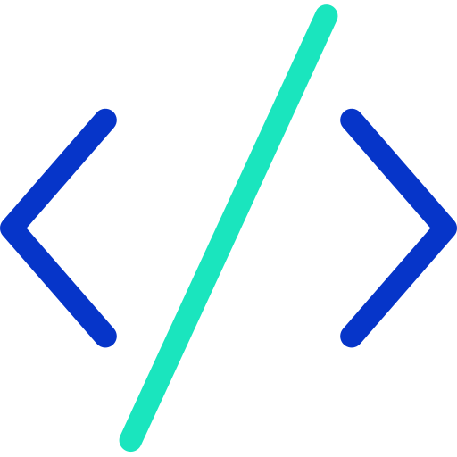

 Open Source
최기호 교수
AI•소프트웨어학부 최기호 교수가 학부에서 진행, 준비하고 있는 오픈소스 소프트웨어 교육 계획을 소개한다.
오픈 소스 소프트웨어 개발 경험 소개
엄재웅(졸업생)
Library: Android, Kotiln 등
5년차 안드로이드 엔지니어.
2017년도 첫 오픈소스 출시부터, 현재 Kotlin/Android 국내오픈소스
랭크 1위의 오픈소스 개발자.
전 세계적으로 의존성 다운로드 100만회 기록. GitHub Star 2만 1천개 이상 기록.
Accompanist(Google), Volley(Google), SVC(Naver) 등 다양한 글로벌 오픈소스 기여,
Android Weekly에 40회 이상 선정,
Google이 선정한 라이브러리 Google DevLib에 3개 오픈소스 프로젝트 선정.
개발한 오픈소스 라이브러리 소개
- Balloon
- Pokedex-AR
Open Source Contribution in Data Science
최찬영 조해웅 채정인
Library: Scikit-Learn, Pandas 등
데이터과학 텀프로젝트를 진행하면서 오픈소스에 기여한 부분에 대한 발표
빅데이터 프로세스 중 데이터 전처리와 데이터 분석 부분을 자동화하여 오픈소스로 개발함.
Automatic Tuner Class (Parameter tuning)
김진아, 이소라, 이예진
Library: PyTorch
딥러닝은 컴퓨터 비전 및 자연어 처리와 같은 많은 주요 기계 학습 영역에서 사용되어 왔다.
그 중 우리가 수행한 딥러닝 문제는 classification 영역이다.
classification은 기존 데이터의 범주 관계를 식별하고 새로 관찰된 데이터의 범주를 결정하는 지도 학습의 한 유형이다.
우리는 이번 term project로 서로 다른 6개의 요가 자세를 구분하기 위한 classification을 수행했다.
classification 문제에서 learning rate, optimizer, scheduler와 같은 parameter tuning은 모델 성능에
상당한 영향을 미칠 수 있다.
따라서 우리는 learning rate, optimizer, scheduler, train and test data set ratio 등을 조정하는
tuner class를 만들었는데 이때 tuner class는 최적의 parameter 조합을 자동으로 찾아준다.
tuner class를 PyTorch documentation 및 PyTorch tutorial의 형식에 따라 작성하여 오픈 소스 커뮤니티에
기여했으며, 사용자가 코드를 쉽게 이해하고 실행할 수 있도록 했다.
개발 알고리즘은 아래 Gachon Kaggle 데이터로 테스트했다.
▶ Kaggle URL:
https://www.kaggle.com/c/gachon-deeplearning
Machine Learning Project
김진경, 박소영
Library: Scikit-Learn, Pandas 등
Classification 과 Clustering 두가지 주제에서 빅데이터 과정에 따라 프로젝트 진행
은행고객 데이터셋을 이용하여 정기예금 할 것인지 예측 (Logistic Regression, SVM, Gaussian NB)
K-means, DBSCAN, EM 알고리즘을 이용하여 hyperparameter tuning
Apache AsterixDB Project
IDALab
(정옥란 교수, Emilio Coronado 방문교수, 유소엽, 박태수, 송제인, 임재상, 김대호, 양성민, 김지혜, 안연선)
UCI Big Data Group
(Prof. Michael Carey, Prof. Chen Li, TaeWoo Kim, Ian Maxon, Xixui Wang)
Library: Apache AsterixDB, PyTorch, Angular, React 등
Apache Top-level 20에 속하는 Apache AsterixDB Project.
UC Irvine Big Data group과 가천대학교 IDALab은 2015년부터 Apache AsterixDB Project 연구를 공동으로
진행하고 있다.
특히 Apache Admin Dashboard를 구현하여 제안함으로써 공식 커밋 2건을 달성했다.
또한 AsterixDB를 기반으로 한 다양한 응용 프로그램들을 연구 및 개발하고 있다.
Data Science Open Source SW Contribution Project
박초롱, 윤채현, 박윤재
Library: Scikit-Learn, Pandas 등
데이터과학 텀프로젝트를 통해 오픈소스 개발에 대하여 발표하였습니다.
빅데이터 end to end process에서 인코딩과 스케일링, 학습할 모델의 모든 조합 중 가장 최적의 조합을 찾아내는 부분을 모듈화 하여 오픈소스로 개발했습니다.